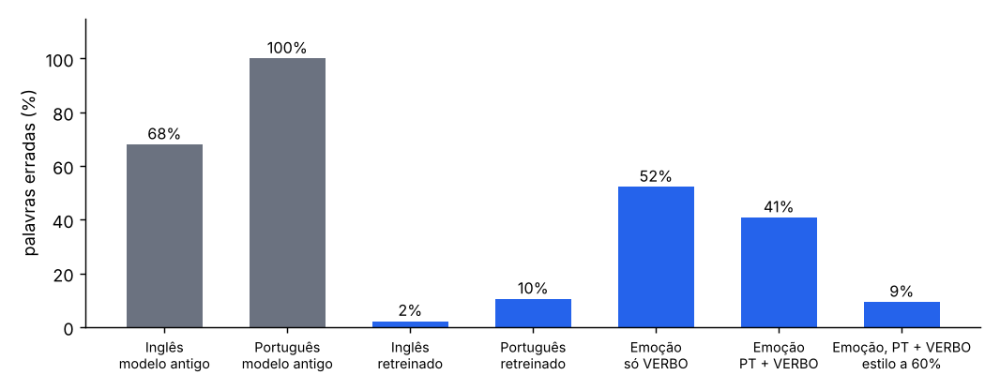
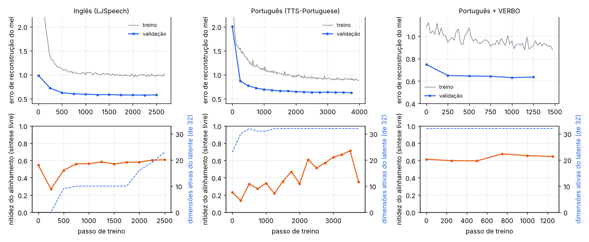
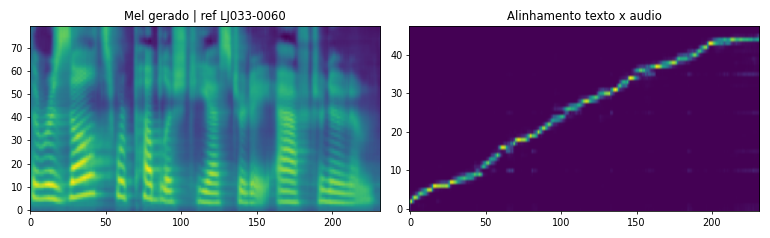
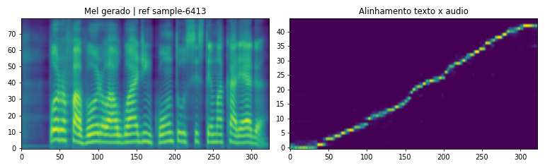
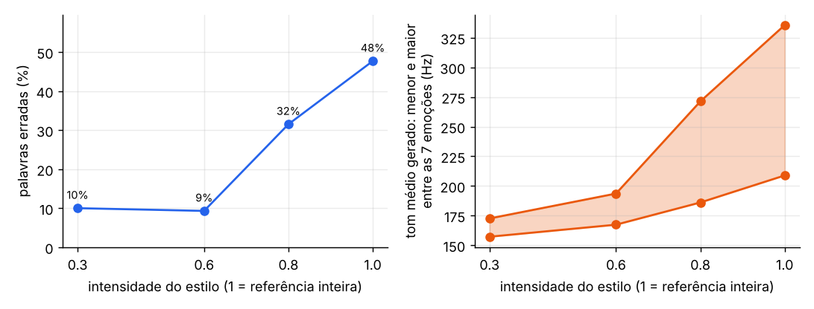
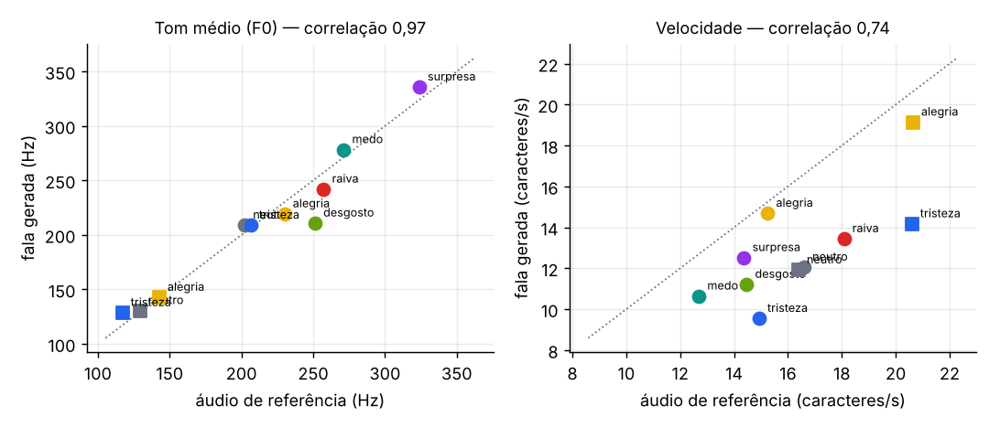

1 · Revisão O que estava errado e o que mudou
A "atenção espectral interpretável" da versão anterior desta página não era um resultado válido.
O codificador do áudio de referência reorganizava o espectrograma com .view() sem trocar os eixos.
Tempo e frequência ficavam misturados, e a posição dos blocos mudava com o preenchimento do lote.
As "bandas do espectro" que a atenção parecia escolher eram efeito desse erro. A comparação com o
baseline também não valia: os dois modelos tinham sido treinados por tempos muito diferentes
(11,2 mil e 35,5 mil iterações).
Conferimos os áudios da versão anterior com reconhecimento de fala (Whisper). O resultado explica por que eles soavam mal:

| Problema encontrado | Efeito | Correção |
|---|---|---|
| Eixos do mel trocados | Tempo e frequência misturados no codificador de estilo; origem da "atenção espectral" | Transposição antes das convoluções; a GRU percorre blocos de tempo de ~0,74 s |
| Preenchimento no resumo | O vetor de estilo de uma fala mudava com o tamanho do lote | A atenção dá peso zero aos blocos de preenchimento |
| LayerNorm extra | Os pesos pré-treinados do Tacotron 2 não funcionavam | Removida |
| Treino do zero | Alinhamento texto–áudio ruim; português ininteligível | Treino a partir do Tacotron 2 pré-treinado, em etapas |
| Vocoder só de inglês | Artefatos em outras vozes | HiFi-GAN universal pré-treinado |
2 · O modelo Tacotron 2 com um vetor de estilo
Caminho do texto
Encoder: transforma caracteres (inglês) ou fonemas (português) em uma sequência de vetores.
Atenção: a cada instante, escolhe em que parte do texto o modelo está.
Decoder: gera o espectrograma mel quadro a quadro e decide quando parar.
Vocoder (HiFi-GAN): transforma o espectrograma em som.
Caminho do estilo
Codificador de referência: 6 convoluções e uma GRU leem o espectrograma do áudio de referência em blocos de tempo.
Resumo por atenção: uma média ponderada dos blocos, ignorando o preenchimento.
VAE: o resumo vira uma distribuição (μ, σ) de 32 dimensões, de onde se sorteia o vetor z.
Injeção: z vira um vetor de estilo somado a todas as posições da saída do encoder de texto.
O termo KL usa free bits (0,5 nat por dimensão) e peso β cíclico, para o modelo não ignorar z. A atenção guiada penaliza alinhamentos longe da diagonal e acelera o início do treino.
Sobre o resumo por atenção. Ele foi mantido, agora sobre blocos de tempo de verdade. Não refizemos a comparação com a alternativa usual (último estado da GRU), então não afirmamos que ele seja melhor.
3 · Treino Três etapas, cada uma partindo da anterior
| Etapa | Ponto de partida | Dados | Passos |
|---|---|---|---|
| Inglês | Tacotron 2 pré-treinado (NVIDIA) | LJSpeech: 13.100 falas, 23,7 h, uma locutora | 2.500 |
| Português | Modelo em inglês | TTS-Portuguese Corpus: 2.245 falas, 3,8 h, um locutor | 4.000 |
| Emoção | Modelo em português | TTS-Portuguese + VERBO (1.167 falas, 12 locutores, 7 emoções) | 1.500 |
Tudo foi treinado em uma GPU L4 no Google Cloud, em máquinas spot (interrompidas várias vezes; o treino retoma do último ponto salvo). Taxa de aprendizado 10−4, com aquecimento de 500 passos.

4 · Inglês 2,2% de palavras erradas
Em 18 áudios (6 frases × 3 referências), 15 foram transcritos sem nenhum erro e todos terminaram sozinhos. Os 3 erros foram na mesma palavra: “stone” entendida como “storm” ou “strong”.

O estilo quase não muda no inglês. Tom e velocidade dos áudios gerados não acompanharam as três referências testadas. O LJSpeech é uma única locutora lendo de forma uniforme: há pouca variação de estilo para aprender.
5 · Português 10,5% de palavras erradas, com a velocidade da referência
O modelo em inglês foi ajustado em 3,8 h de fala em português. Em 18 áudios, todos terminaram sozinhos. Os erros que sobram são trocas pontuais (“carrega” → “cariga”, “olhou” → “orou”); duas das falhas contadas são só a transcrição escrevendo “8” no lugar de “oito”.
A mesma frase com três referências
“O filme começa às oito horas da noite.” A referência muda só a velocidade da fala.
Outras frases

6 · Emoção Voz e tom copiados das referências do VERBO
O VERBO tem 12 locutores falando em 7 emoções, mas só 14 frases diferentes. Isso cria um conflito: o corpus ensina muito sobre como falar e quase nada sobre o que falar. Testamos três receitas, sempre com as mesmas 6 frases novas e 10 referências (7 emoções da locutora f1, 3 do locutor m1).
| Receita | Palavras erradas | O tom acompanha a referência? |
|---|---|---|
| Modelo de português, sem VERBO | 19% (4 referências) | Não: a voz é sempre a do corpus de português |
| Ajuste só no VERBO | 52% | Sim (correlação 0,96) |
| Português + VERBO juntos | 41% | Sim (correlação 0,97) |
| Português + VERBO, estilo a 60% | 9% (7 referências) | Em parte: a velocidade muda com a emoção, o tom fica perto do neutro |
Com o estilo inteiro da referência, o modelo copia a voz e o tom (inclusive troca voz feminina por masculina), mas perde inteligibilidade: ele passa a falar com uma voz que só conhece em 14 frases. A saída que encontramos é um controle de intensidade: multiplicar o código de estilo da referência por um fator entre 0 e 1 antes de sintetizar. Em 60%, quase todas as palavras voltam a ser entendidas.


Referências (áudio real do VERBO)
Todas dizem “Agora vou pôr a camiseta e sair para uma caminhada.”
Frase nova com o estilo inteiro (100%)
“Eu nunca pensei que veria você aqui de novo.” A voz e o tom seguem a referência, mas várias saem truncadas ou erradas (surpresa e medo são as piores).
A mesma frase com o estilo a 60%
Todas são entendidas. A voz volta a ser a do corpus de português; o que sobra da emoção é principalmente o ritmo.
Trocando de locutor
Conclusão desta parte. Copiar voz e emoção funciona, mas com os dados que temos não dá para ter emoção forte e fala clara ao mesmo tempo. O limite é o VERBO ter só 14 frases, não o modelo. Um corpus emocional com texto variado é o que falta.
7 · Limites e próximos passos O que ainda não está resolvido
- Amostra pequena de avaliação. São 6 frases por referência. Os números indicam a ordem de grandeza, não uma medida precisa.
- Só inteligibilidade foi medida. A naturalidade não foi avaliada por ouvintes.
- Falas longas ficaram de fora. O treino em português usou só falas de até 11 s.
- O resumo por atenção não foi comparado com a alternativa mais simples.
- O vetor de estilo é global. Ele descreve a fala inteira; não varia ao longo da frase.
Rumo à dublagem
O objetivo seguinte é dublar filmes: o texto traduzido entra como texto, e a fala do ator original entra como referência de estilo. Este projeto entrega a primeira peça: síntese em português com tom e velocidade vindos de uma referência. Faltam o controle da duração de cada fala (para caber na cena), o uso do vídeo como entrada e a sincronia labial.